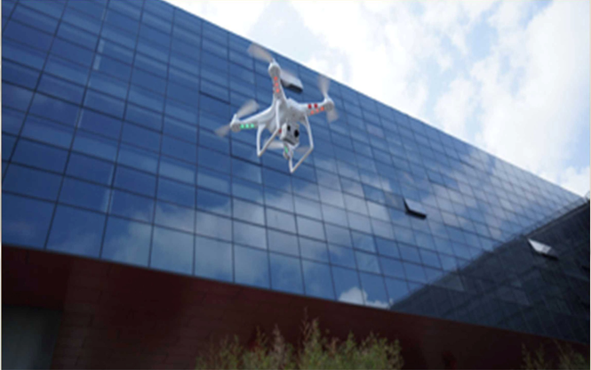

Viteve të fundit kemi parë një rritje masive të prodhimeve dhe shitjeve të objekteve fluturuese të njohura si multirotore helikoptere.
Shume here i referohemi dhe si Drone, Quadroters ose Quad Copters.
Këto UAV (Unmanned Aereil Vehicles) kanë kater krahë ku në secilën ndodhet nga një motorr. Krahët zakonisht vendosen në formën 'X' ose '+'.
Në quadcopter dy motorrë rrotullohen në sensin e drejtimit të kohës dy të tjerë në sensin e kundërt të kohës duke e bërë kështu që objekti të fluturojë në drejtime te caktuara.
Materialet bazë
që kërkohen per kete projektë
MicroControlleri Multi-wii (ATmega32U4)
Motorri (1000g - 750rpm/v)
Transmetuesi dhe marrësi (2.5 GHz/5 Kanale Kontrolli)
Limituesi I rrymës në motorr (ESC)
Helikat që montohen në motor.
Burimi Energjisë Elektrike (Power Supply)
Një bazë e fortë për të mbajtur Strukturën. (Frame)
Principet e punës
Quadcopteri
është një paisje me një ndërthurje të elektronikës, mekanikës dhe kryesisht me parimin e aviacionit.
Quadcopteri ka katër motorre ku shpejtësia e rrotullimit të tyre dhe drejtimi i rrotullimit të tyre varet nga dëshira e telekomanduesit per ta levizur paisjen në drejtime të vecanta.(Take Off Motion, Landing Motion, Forword Motion, Backward Motion).
Rrotullimet e motorrit varen nga sinjali i dërguar nga transmetuesi (5 kanalesh).
Sinjali nga Micro Controller-i shkon tek ESC i cili kontrollon shpejtësine e motorrit.
1. Principet e punës
2. Principet e punës
3. Principet e punës
Diagrama Bllok
Diagrama qarkut
Aplikimet
Projekte në terren, si studimi i jetës së egër nga distanca.
Kapja e fotove dhe video-ve në eventet sportive.
Bërja e fotografive nga vende të vështira për tu arritur.
Monitorimi i kushteve Bujqësore dhe Mjedisore.
Mënyre më e lehtë e inspektimit dhe monitorimit të projekteve të ndërtimit.

Video
Imazhe të filmuara në Shkollën Harry T. Fultz nga: